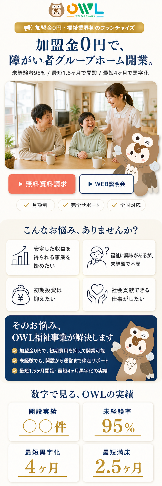
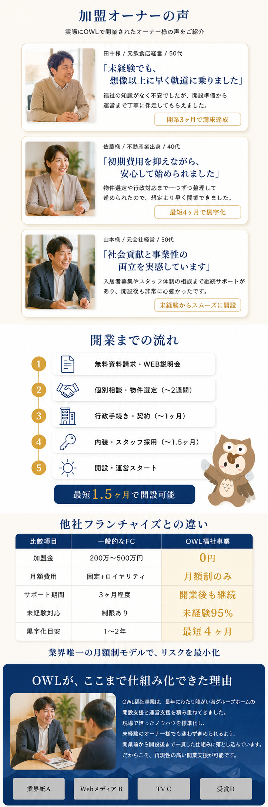

← 資料一覧に戻る
OWL新LP モックアップ案 提案
弊社支援先「ミチルシリカ」の高エンゲージLP構造を、福祉事業文脈に転用した新LP案
現状LPは 比較表が画像・h1なし・お客様の声セクションなし など改善余地があります。
そこで、実績のあるLP構造（お悩み→解決→実績→お客様の声→流れ→比較→ストーリー→オファー→FAQ→CTA）に作り替えた案がこちらです。
マスコット「アウくん」はそのまま活用し、配色は信頼感のあるネイビー×ゴールドに統一しています。
現在のLP（本番稼働中）
https://owl-fukushi.net/lp_zero-plan-g/
※ 広告LPは内容共通のため、こちらに統一
新LP モックアップ案

上部：FV〜お悩み〜実績

中部：お客様の声〜流れ〜比較
現状からの改善ポイント
- お客様の声を新設：加盟オーナーの取材カードで信頼性を可視化（現状LPには無し）
- 比較表をHTML化：画像→テキストの表に。AI検索・SEOに内容が伝わる
- 開業までの流れを5ステップで明示：「最短1.5ヶ月」の根拠を見せる
- h1見出しを設置：「加盟金0円で、障がい者グループホーム開業」
- 配色を刷新：蛍光ピンク→ネイビー×ゴールドで経営者層に刺さるトーンへ
- マスコット継続：アウくんはそのまま活用しブランドの一貫性を維持
このモックアップは ChatGPT（image生成）で作成したデザイン案です。承認いただければ、これをベースにHTML/CSSで実装し、本番LPに反映します。